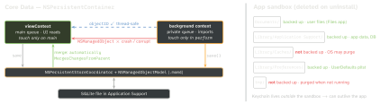

ios-swift · folio
In one line: Secrets → Keychain; small settings → UserDefaults; blobs →
files in the right sandbox directory; a queryable object graph →
Core Data / SwiftData; recomputable in-memory → NSCache. In Core
Data every NSManagedObjectContext is bound to one queue: touch it and its
objects only inside perform, and hand NSManagedObjectIDs — never objects —
across queues.
Download PDF Print view LaTeX source


Decision table
| Store | For | Secrets | Backup | Uninstall |
|---|---|---|---|---|
| UserDefaults | small prefs, flags (whole plist read into RAM) | no | yes | deleted |
| Keychain | tokens, passwords, keys | yes | encrypted backups | survives* |
| Files | images, downloads, any size | no | per dir | deleted |
| Core Data | 10k+ related, queried records | no | yes | deleted |
| SwiftData | same, iOS 17+, SwiftUI-first | no | yes | deleted |
| NSCache | recomputable; RAM, self-evicting | no | — | on quit |
.completeFileProtection), but that is not app-level secret storage.
NSCache: thread-safe, evicts under memory pressure, does not copy keys;
limits are hints.
Core Data
viewContext= main queue.newBackgroundContext()/performBackgroundTask { ctx in }= private queue.perform(async;await-able iOS 15) /performAndWait(blocks caller) run the block on the context’s queue — the only legal access, even a read or a relationship (fires a fault).objectIDis temporary until save;object(with:)returns a fault,existingObject(with:)throws if the row is gone.- Merge: contexts do not see each other’s saves.
viewContext.automaticallyMergesChangesFromParent = true(picks up sibling saves via the coordinator) ormergeChanges(fromContextDidSave:)inside the target’sperform. FRC /@FetchRequestwatch only their own context. - Conflict policy default = error (save throws); usual choice:
NSMergeByPropertyObjectTrumpMergePolicy. - Parent/child:
child.parent = viewContext; childsave()only pushes up in memory — disk needs the parent’s save. - Faulting: fetched objects are placeholders filled on access. N+1 fix:
relationshipKeyPathsForPrefetching,fetchBatchSize. - Batch requests bypass contexts → merge returned IDs.
- Migration: lightweight = inferred (add/remove, optional/default, rename via Renaming ID), on by default; heavyweight =
NSMappingModel+NSEntityMigrationPolicy.
Keychain — kSecAttrAccessible…
WhenUnlocked = default, only while unlocked · AfterFirstUnlock = after first unlock since boot — needed for background work · WhenPasscodeSetThisDeviceOnly = needs a passcode · suffix ThisDeviceOnly = never restored to another device. SecItemAdd twice → errSecDuplicateItem (use SecItemUpdate).
Example — import off main, show on main
let c = NSPersistentContainer(name: "Model")
c.loadPersistentStores { _, e in precondition(e == nil) }
c.viewContext.automaticallyMergesChangesFromParent = true
func importItem(_ dto: ItemDTO) async throws -> NSManagedObjectID {
let bg = c.newBackgroundContext() // private queue
return try await bg.perform { // on bg's queue
let item = Item(context: bg); item.title = dto.title
try bg.save() // -> coordinator
return item.objectID } // ID leaves, not item
}
// on the main actor:
let id = try await importItem(dto)
let item = try c.viewContext.existingObject(with: id) as! ItemSwiftData (iOS 17+)
@Model class ≈ entity · ModelContainer ≈ container · ModelContext ≈ context (mainContext is @MainActor, autosaves) · @Query(sort: \Trip.date) ≈ live FRC in a view. Background: a @ModelActor owns its context; pass PersistentIdentifier, never the @Model. Migrations: VersionedSchema + SchemaMigrationPlan.
Traps
- A managed object on the wrong queue “works” until it crashes. Launch arg
-com.apple.CoreData.ConcurrencyDebug 1traps the first violation. - Background save, UI stale → not merged into
viewContext. - Rename without a Renaming ID = drop + add → data lost.
- Token in UserDefaults = readable from a backup. In Keychain with
WhenUnlocked= unreadable during background refresh. - Keychain survives reinstall: clear stale tokens on first run.
- Re-downloadable files in Documents bloat iCloud backup → Caches.
Keychain item classes (kSecClass…)
GenericPassword | token, API key — keyed by service + account |
InternetPassword | password for a server — keyed by server, protocol, port |
Certificate · Key | X.509 certificate · private/public key |
Identity | certificate + its private key (client TLS) |
Remember
Secret → Keychain, setting → UserDefaults, blob → file, graph → Core Data / SwiftData, rebuildable → NSCache. One context, one queue; pass IDs, not objects.